(zu § 40 Absatz 6 und 7)
Allgemeine und Besondere Gefahrzeichen
| 1 | 2 | 3 | |||
| lfd. Nr. | Zeichen | Erläuterungen | |||
| A b s c h n i t t 1 A l l g e m e i n e G e f a h r z e i c h e n ( z u § 4 0 A b s a t z 6 ) | |||||
| 1 | Zeichen 101 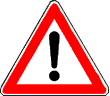 Gefahrstelle | Ein Zusatzzeichen kann die Gefahr näher bezeichnen. | |||
| 2 | Zeichen 102 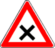 Kreuzung oder Einmündung | Kreuzung oder Einmündung mit Vorfahrt von rechts | |||
| 3 | Zeichen 103 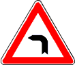 Kurve | ||||
| 4 | Zeichen 105 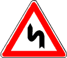 Doppelkurve | ||||
| 5 | Zeichen 108 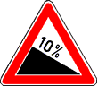 Gefälle | ||||
| 6 | Zeichen 110 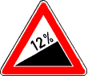 Steigung | ||||
| 7 | Zeichen 112 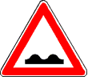 Unebene Fahrbahn | ||||
| 8 | Zeichen 114 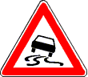 Schleuder- oder Rutschgefahr | Schleuder- oder Rutschgefahr bei Nässe oder Schmutz | |||
| 9 | Zeichen 117 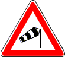 Seitenwind | ||||
| 10 | Zeichen 120 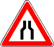 Verengte Fahrbahn | ||||
| 11 | Zeichen 121 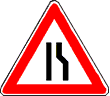 Einseitig verengte Fahrbahn | ||||
| 12 | Zeichen 123 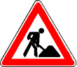 Arbeitsstelle | ||||
| 13 | Zeichen 124 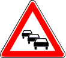 Stau | ||||
| 14 | Zeichen 125 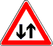 Gegenverkehr | ||||
| 15 | Zeichen 131 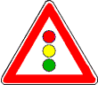 Lichtzeichenanlage | ||||
| 16 | Zeichen 133 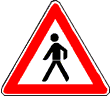 Fußgänger | ||||
| 17 | Zeichen 136 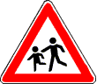 Kinder | ||||
| 18 | Zeichen 138 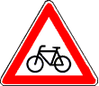 Radverkehr | ||||
| 19 | Zeichen 142 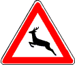 Wildwechsel | ||||
| |||||
| 20 | Zeichen 151 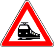 Bahnübergang | ||||
| 21 | Zeichen 156 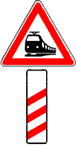 Bahnübergang mit dreistreifiger Bake | Bahnübergang mit dreistreifiger Bake etwa 240 m vor dem Bahnübergang. Die Angabe erheblich abweichender Abstände kann an der dreistreifigen, zweistreifigen und einstreifigen Bake oberhalb der Schrägstreifen in schwarzen Ziffern erfolgen. | |||
| 22 | Zeichen 159 Zweistreifige Bake | Zweistreifige Bake etwa 160 m vor dem Bahnübergang | |||
| 23 | Zeichen 162 Einstreifige Bake | Einstreifige Bake etwa 80 m vor dem Bahnübergang | |||